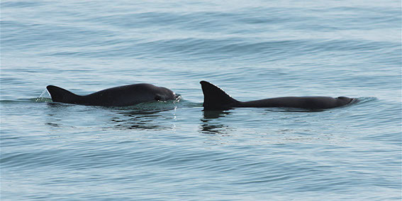
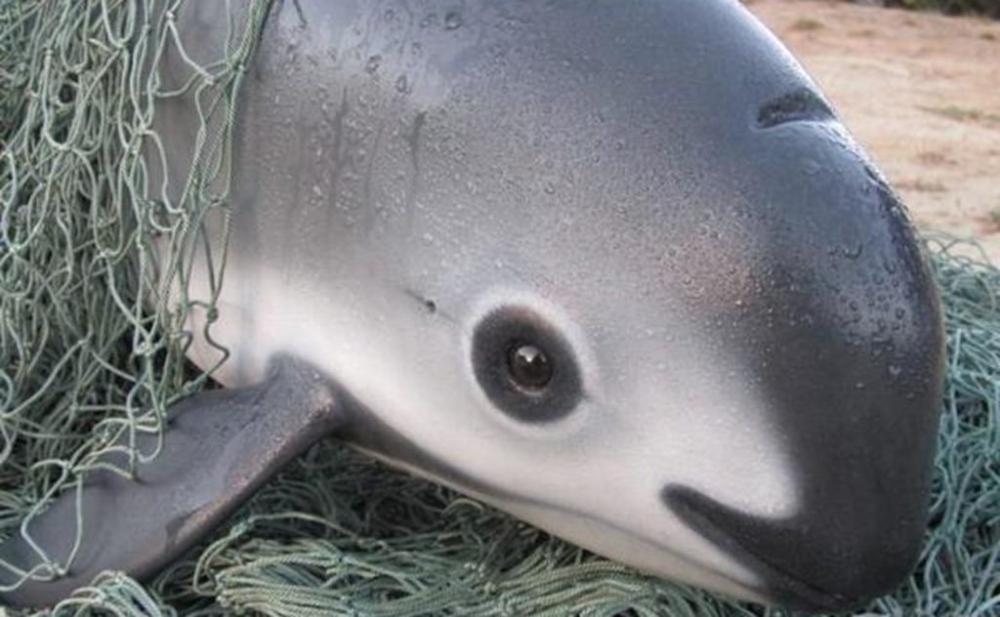
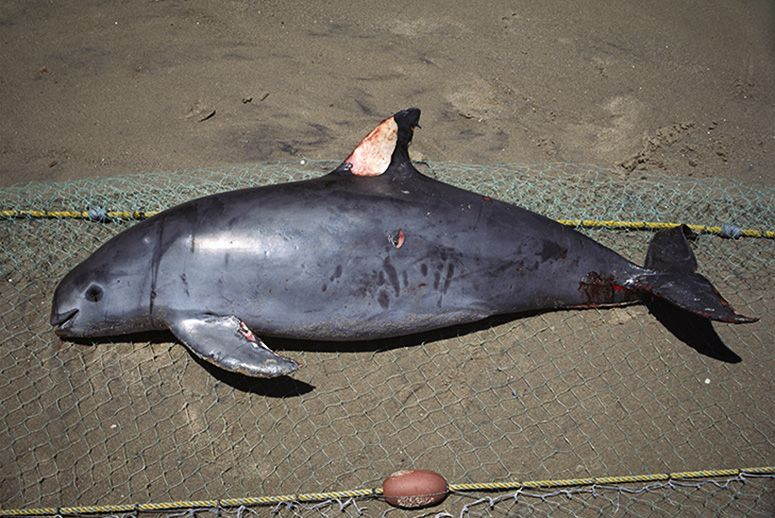
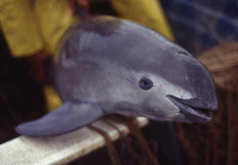
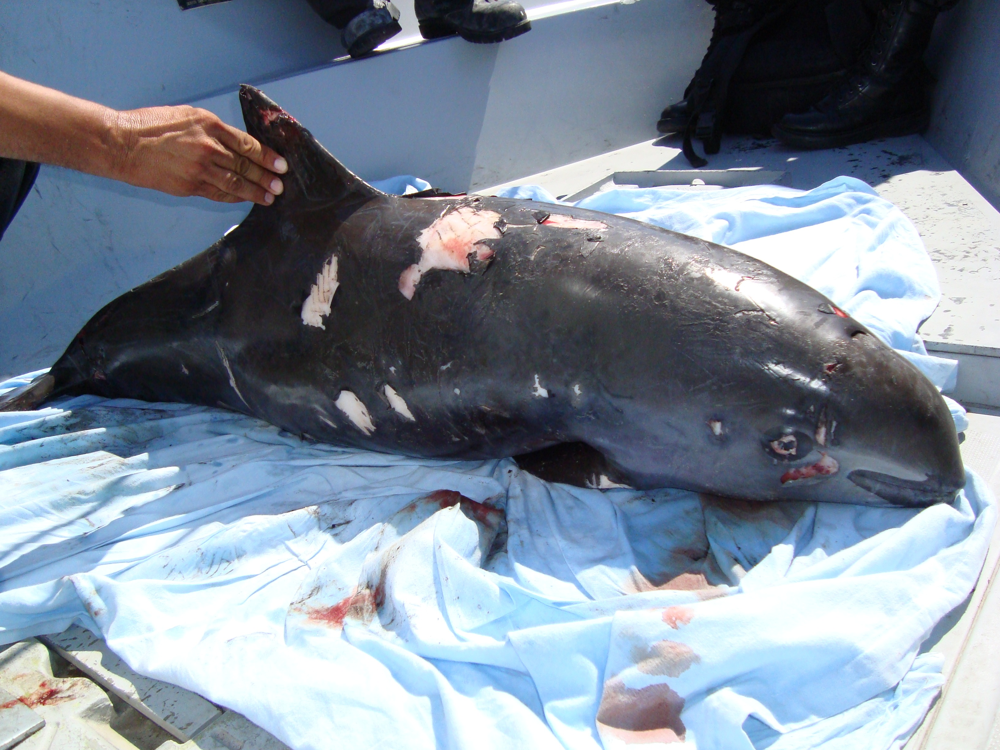
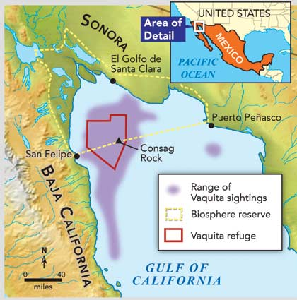

In General:
Vaquita, the world’s most rare marine mammal, is on the edge of extinction. This little porpoise wasn't discovered until 1958 and a little over half a century later, we are on the brink of losing them forever. Vaquita are often caught and drowned in gillnets used by illegal fishing operations in marine protected areas within Mexico's Gulf of California. The population has dropped drastically in the last few years.
What is a Vaquita?
The vaquita has a large dark ring around its eyes and dark patches on its lips that form a thin line from the mouth to the pectoral fins. Its dorsal surface is dark gray, sides pale gray and ventral surface white with long, light gray markings. Newborn vaquita have darker coloration and a wide gray fringe of color that runs from the head to the dorsal flukes, passing through the dorsal and pectoral fins. They are most often found close to shore in the Gulf's shallow waters, although they quickly swim away if a boat approaches. The vaquita is the most endangered cetacean in the world.
     Conservation
Working alongside scientists and non-governmental agencies, the Government of Mexico has taken a number of actions over the years that were intended to eliminate gillnets from the region and to protect the vaquita. To guide these efforts, the Government of Mexico established the International Committee for the Recovery of the Vaquita (CIRVA) in 1996 with a mandate to develop, oversee and promote a recovery plan for the vaquita. CIRVA has developed many recommendations, summarized in 9 reports over the intervening years. The most consistent and important recommendation is to permanently ban the manufacture, possession or use of all gillnets on land or sea throughout the range of vaquitas.
With as few as 30 left, the species will become extinct without a fully enforced gillnet ban throughout their entire range. With the population continuing in steep decline, it is clear that the vaquita will be extinct in a few years. In June 2017 a permanent ban was published in Mexican regulations that made illegal the use or transport of gillnets with exemptions for two fish species (curvina and sierra). Night fishing was banned and legal entry and exit points were restricted. Since many of these provisions were temporarily in place from 2015-2017 and illegal fishing occurred at high rates, enforcement is clearly critical and the effect on vaquita remains to be seen.The ban is the last chance for vaquita and also creates opportunities to continue efforts to develop and implement alternative fishing methods that do not endanger vaquitas and provide support for local communities.